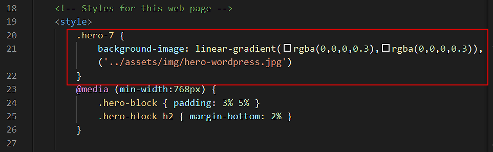

About hero block images
In the Hero Blocks with Images Tutorial, you learnt how to add a background image to a hero block, add a shadow effect to the hero text, and include a tinted overlay behind the hero text and in front of the background image.
Background images differ from regular images on a web page:
- As you learnt in the Working with Images tutorial, regular images are added to a web page with the <img> tag.
The image link is in the HTML of the web page. See the example below.

- However, background images are not set in the HTML of the web page.
Background images are set in the CSS stylesheet file that is linked to the web page. See the example below.
But what if you want to set different background images on different web pages – when all the web pages use the same styesheet? How can that be done?
Updating hero block images
In the six-page website template, three web pages – your Portfolio, JavaScript and WordPress pages – all use a background image in their hero blocks.
For each page, however, the background image is different. Yet all three pages are controlled by the same global.css stylesheet file.
The solution is to set the background image within a <style> ... </style> tag pair in the head section of each web page.
Below you can see the example from the head section of the WordPress page.

In summary, to set a different background image on an individual web page:
- Place the new background image in the assets/img sub-folder.
- In the head of the web page, within a pair of <style> ... </style> tags, link to the new image file.
Overlay opacity
To make the hero text easier to read against the background image, there is an overlay in front of the image and behind the heading and sub-heading. In the WordPress page example above, its value above is set to 0.3.
Depending on your chosen image, you may want to make the overlay:
- Less opaque (more transparent and lighter) by reducing its value to 0.2 or 0.1.
- More opaque (less transparent and darker) by increasing its value to 0.4 or 0.6.
Overlay tint colour
Also in the WordPress web page example above, the overlay color is set to black (0,0,0).
Alternatively, you could apply a colour tint to the overlay by changing this to another RGB colour value. For example, to red (255,0,0) or blue (0,0,255).
Hero block padding
The vertical (top-bottom) and horizontal (left-right) spacing within the edges of the hero block is set for all web pages by padding values in the global.css stylesheet.
However, depending on the amount of text within the h1 and h2 headings, you may want to change this slightly in the head of each web page – for large screens, on mobile screens or on both.
Hero text properties
All properties of the h1 heading and h2 sub-heading in each hero block are set in the global.css stylesheet.
Depending on the amount of text within the heading and sub-heading, you may want to increase or decrease their font sizes on large and/or mobile screens.
You can also change the font colour and weight (normal or bold).
- To apply your changes to all web pages, change the values in the global.css stylesheet.
- To apply changes only to an individual web page, add the new values within a pair of <style> ... </style> tags in the page's head section.
Updating hero block vidoes
Unlike background-images, background videos are set directly in the HTML of a web page.
Below is the HTML of the template 'home page' which contains a background video and a 'poster' image which displays until the video is fully downloaded into the user's web browser.
To use a different video and poster image, link to the new file names as shown in the HTML above.
Both the background video and poster image files are stored in your assets/videos sub-folder.
As with background images, background videos can also have a tinted overlay. In the website template 'home page', the overlay has a slightly blue tint colour that is darker at the top of the hero block than at the bottom.
Change the overlay tint colour and opacity according to your chosen colour scheme.
Creating a new poster image
If you want to use a different background video, you will need to create a new 'poster' image for it. This is the image that will display until the video has finished downloading and is ready to play.
There are the main steps involved:
- Add a link to new video file in your web page.
- In your web browser, display only the first frame of the new video.
- Capture a screenshot of the video's first frame, and edit the image as required.
- Compress the file size of the new image.
- And finally, add the new image as the poster image for your web page.
Displaying the first frame of the new video
Follow the steps below.
- Place your new background video in the assets/videos sub-folder.
- In VS Code, open your index.html 'home' web page.
- In the head section, enter a link to your new video file. In this example, the file is named home-video-new.mp4.
- In the hero area, delete the two comment lines at the beginning and end of the buttons block as shown below.
- Add a new comment that will completely hide the heading, sub-heading and buttons from displaying in the web browser.
- The new comment begins on a line above the h1 heading.
- The new comment ends just after the closing </div> tag that ends the row block.
See the image below.
- Next, at the top of the hero block, remove the file name of the old poster image from within the pair of double quotes (""). Also, remove the attribute autoplay from the video tag.
The top of your hero block should now look as follows.
- Save your web page and reload it in your web browser.
You should see only the video, without any heading text or buttons in front of it. Also, because the video is not playing, your web browser displays only the first frame of the video.
Capturing a screenshot image of the video's first frame
Your next task is to create the image you will use as the 'poster' for your new background video.
- Take a screenshot of your web browser window that shows the video's first frame.
- On Windows, press the Alt and PrtScn keys together.
- On Apple Mac, press and hold these three keys together: Shift, Command, and 3.
-
- Open any image editing software program and paste the screenshot image into it.
- Edit the image to remove everything except the opening video frame.
- Save the image as a JPG file in your assets/img sub-folder.
Compressing the poster image's file size
You will want your poster image to have the smallest possible file size, so that it will load as quickly as possible on the user's screen.
- In a new browser tab, go to this website:
https://tinyjpg.com/
- Drag-and-drop your new poster image file to the website
- When the image compression is finished, click the Download All button.
- Copy the downloaded file named tinified.zip from your Downloads folder to your assets/img sub-folder, and unzip it.
- Copy the unzipped file from the tinified sub-folder back up to your assets/img sub-folder.
You no longer need this tinified sub-folder, so you can delete it.
Adding the poster image to your hero block
Now that you have captured, edited and compressed an image of the new video's opening frame, you can link to it in the HTML of your hero block.
In the example below, the poster image is named hero-video-poster-new.jpg
Also, add the autoplay attribute back to the video tag.
And remove the comment tag pair that surrounds your heading, sub-heading and buttons.
Save your web page, reload it in your web browser, and verify it displays correctly on both large and mobile screens.
Preloading the poster image
There is one further step you can take to ensure the poster image loads as quickly as possible on your user's device.
In VS Code, add the following line in the head section, just under the description meta tag.
<link rel="preload" href="assets/videos/hero-video-poster.jpg" as="image">
This line will load the poster image before any other elements of the web page.
Replace the file name hero-video-poster.jpg with whatever is the name of the poster image on your 'home' page.
Also ensure you have set the correct sub-folder location for the poster imege – on your website, you might have placed the image in either the assets/img or assets/videos sub-folder.
Playing a background video on Apple iPhones and iPads
To get your background video to play on Apple mobile and tablet devices, you will need to add a few more attributes to the opening video tag in the hero block of your web page.
Without these extra attributes, your opening video tag looks like this:
<video loop muted autoplay poster="assets/videos/hero-still.jpg" class="background-video">
In the example above, the file name of the poster image is hero-still.jpg. And the file is in located in the assets/videos sub-folder.
For Apple devices ,you need to add some new attributes as follows:
<video loop playinline muted autoplay poster="assets/videos/hero-still.jpg" class="background-video" disablepictureinpicture preload="auto">
As you can see, the new attributes of the opening video tag are: playinline, disablepictureinpicture and preload="auto".
You can copy-and-paste the above into your index.html web page, to replace the code already there.
See the example below.
Ensure that both the poster file name and poster sub-folder file location are correct for your website.
Upload your website to GitHub
The final step is to upload your website pages and folders to GitHub.
- Sign in to your GitHub account and, at the left of the screen, click the name of the repository that holds your web pages.
- On the next screen, click the Add file button and then choose Upload files from the dropdown list.

- In File/Windows Explorer on your computer, display your websites folder and then drag-and-drop the following files and sub-folders to the GitHub tab in your web browser.

- Scroll down to the bottom of the GitHub screen, and accept or edit the short message (Add files via upload) in the Commit changes box.
Finally, click the green Commit changes button to upload your files and folders.
Your web pages are now published on GitHub. Your Home page has a web address similar to the following, where username is the username you have chosen for your GitHub account:
https://username.github.io/index.html
or, simply:
https://username.github.io
It may take a few minutes for your uploaded files to appear on GitHub.
Return to Contents.